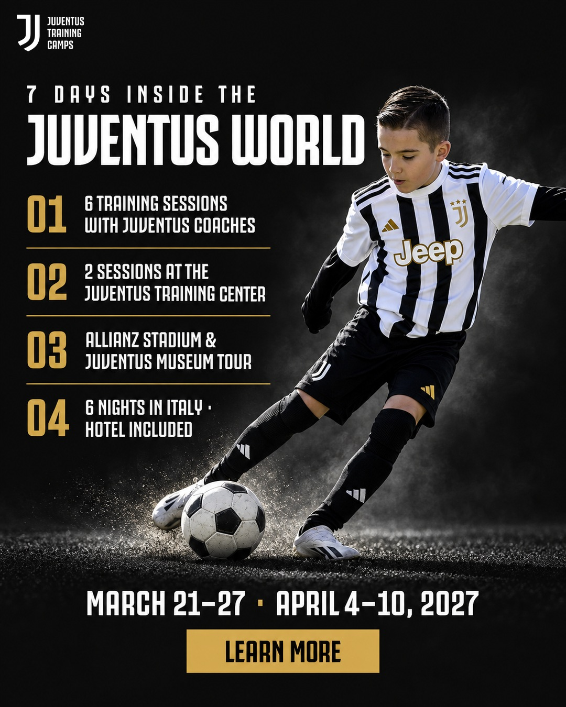
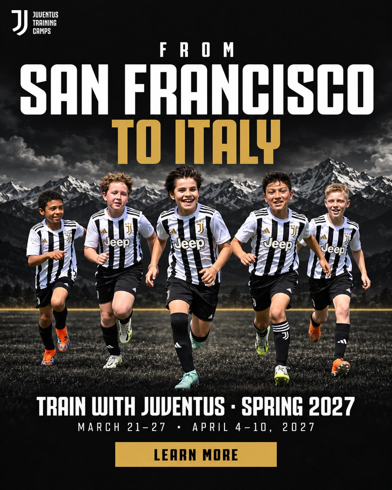

Propuesta de la campaña de prueba acordada en la reunión del 29-10: conseguir familias interesadas (leads) en las dos ciudades, para llamarlas y hacerles seguimiento por correo y SMS. Si alguna paga directamente, mejor. Abajo están la estructura, los anuncios, los textos, el seguimiento, cómo se evalúa a la semana y los puntos por confirmar.
| Web (propuesto) | Formulario instantáneo de Meta | |
|---|---|---|
| Calidad del lead | Más alta: la familia ve el itinerario, los hoteles y lo que incluye antes de dejar sus datos. | Más baja: se llena en 2 toques sin salir de Instagram, y mucha gente no recuerda haberlo llenado. |
| Costo por lead | Más alto (se esperan USD 15–40). | Más bajo (USD 5–15), pero con más contactos que no contestan. |
| Dónde llega | A la plataforma de inscripción, con el anuncio de origen, igual que los ID Camps. | A Meta: hay que descargarlo o conectarlo aparte. |
| Pago directo | Posible: el mismo registro sigue al pago. | No: siempre necesita la llamada. |
Con un paquete de USD 4.000 o más por familia (jugador y un acompañante), el lead que vale es el que ya conoce el programa. Plan B: si en 7 días la web no trae ningún registro y los clics son buenos (CTR de enlace del 1 % o más), se prueba un formulario de Meta "de mayor intención" con 3 preguntas: edad del jugador, fecha preferida y si viajaría un familiar.
| Nivel | Configuración |
|---|---|
| Campaña | JTE | LEADS | SF-SEA | PRUEBA · objetivo Clientes potenciales, conversión en el sitio web, evento Lead · presupuesto por conjunto, para que cada ciudad tenga su prueba |
| Conjunto 1 | SF | BAY AREA · USD 5/día · San Francisco + 25 millas (cubre SF, Oakland, Berkeley, Marin y la Península hasta San Mateo) |
| Conjunto 2 | SEA | SEATTLE METRO · USD 5/día · Seattle + 20 millas (cubre Bellevue, Redmond, Kirkland y Shoreline) |
| Público | "Vive o estuvo recientemente" en la zona (la única opción válida hoy) · Advantage+ con sugerencia de 30 a 55 años (padres) · todos los géneros · inglés · sin intereses (con este presupuesto, el público abierto aprende más rápido) |
| Ubicaciones | Feed, Stories y Reels de Instagram y Facebook · sin Audience Network (en esta cuenta trajo clics accidentales) |
| Anuncios | 4 por conjunto, los mismos en las dos ciudades salvo la pieza con el nombre de la ciudad · el video de Jesús se suma cuando esté (anuncio nuevo, sin tocar los otros) |
| Mejoras automáticas | Sin traducción automática ni "optimizar destino del sitio web" |
| Enlace | juventuscampsusa.com/experience?utm_source=meta&utm_medium=paid&utm_campaign=jte_sf_sea&utm_content={{ad.name}} |
| Fechas | Arranca cuando se apruebe · evaluación el día 7 · la promoción de la JTE va hasta la primera semana de febrero |
Fotos reales de la experiencia en Italia, con la camiseta de esta temporada. Toca una imagen para verla en grande.


Después: video corto de Jesús (20 a 40 s) invitando a la experiencia. Es el anuncio que más confianza da en una compra de este valor y se suma como 5.º anuncio en los dos conjuntos.
El llamado a la acción va dentro del texto. Tono de privilegio ("tu hijo puede ser uno de ellos"), sin precios.
En una compra de este valor, la llamada es la que vende. Correos y SMS la acompañan: 1 mensaje al día como máximo y ninguno repetido. Ningún mensaje pide que respondan: todos cierran con el enlace a la página. Quien paga sale del seguimiento.
| Cuándo | Canal | Qué |
|---|---|---|
| Mismo día | Aviso interno | Cada lead nuevo de SF o Seattle se le pasa a quien llama (nombre, ciudad y fecha elegida), sin pasar datos por ninguna web. |
| Día 0 | Correo | "Your Juventus Training Experience guide": qué incluye, las dos fechas, fotos reales y botón a la página. |
| Día 0–1 | Llamada 1 | Dentro de las 24 horas: resolver dudas (viaje, hotel, acompañante) y explicar paquetes y precios. |
| Día 1 | SMS | Corto, con el enlace a la página. |
| Día 3 | Correo | Preguntas frecuentes: si el niño puede viajar solo, vuelos, qué no incluye y amistosos. |
| Día 4 | Llamada 2 | Solo si no se pudo hablar en la primera. |
| Día 7 | Correo | Cómo se vivió en 2026, con fotos y la fecha más cercana. |
1. Estructura y presupuesto (USD 5 + USD 5 al día, 7 días, objetivo Lead en la web)
2. Anuncios (las 5 piezas)
3. Textos (A por ciudad, B corto, título y descripción)
4. ¿Quién llama a los leads y a quién se le avisa?
En la reunión del 23-10, Jesús pidió que los leads le lleguen a él.
5. Cupos reales por fecha y fecha de cierre de inscripciones
En la plataforma aparecen 300 por fecha. Los anuncios dicen "limited spots", sin número.
6. Correos y SMS del seguimiento
Si se aprueban, se arman los 3 correos y el SMS y se mandan para revisión antes de activarlos.
7. Video de Jesús: ¿para cuándo?
Al terminar, toca "Copiar respuestas" y pégalas por WhatsApp. Nada se publica en Meta hasta que se apruebe.